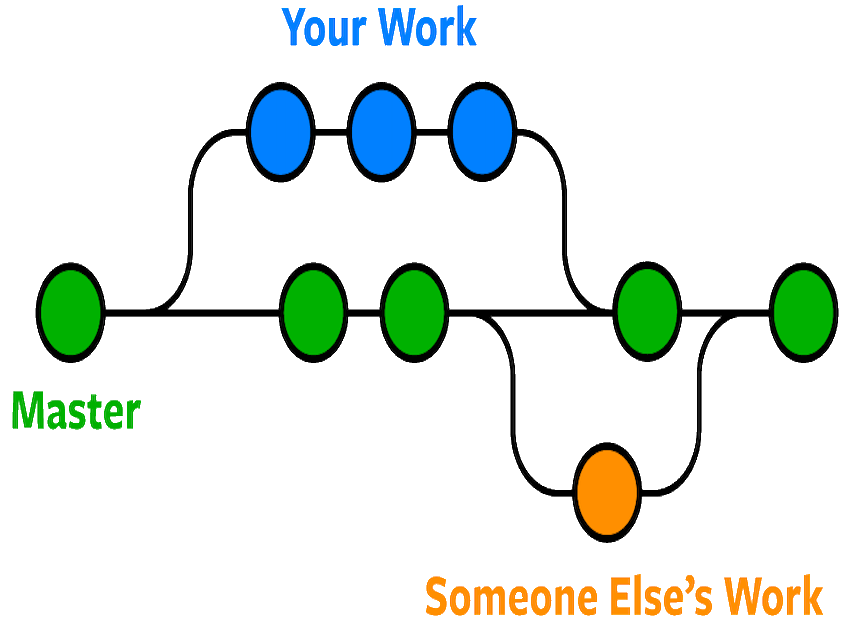
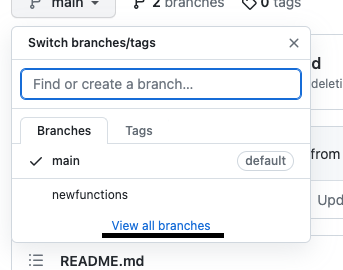
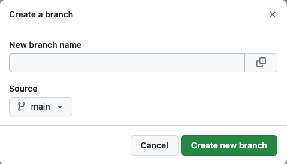

Jouw beeldscherm is niet groot genoeg om deze website te weergeven!
Github Tutorials
Home
Over GitHub
Tutorials
Ons YouTube Kanaal
Wat is en hoe maak ik een Branch?
1. Wat is een Branch?
Een branch is een manier om updates uit te brengen, nieuwe functies te testen,... zonder dat je main branch in gevaar komt.

2. Hoe maak ik een Branch aan?

Vind aan de linkerkant van de hoofd pagina van je repository een dropdown-menu van de branch, selecteer “View all branches”.
2.1 Hoe maak ik een Branch aan?
Vul vervolgens alle informatie in en kies de source die je wil gebruiken.

3. Bekijk de video over deze tutorial.
Vorige tutorial
1
2
3
4
5
Volgende tutorial